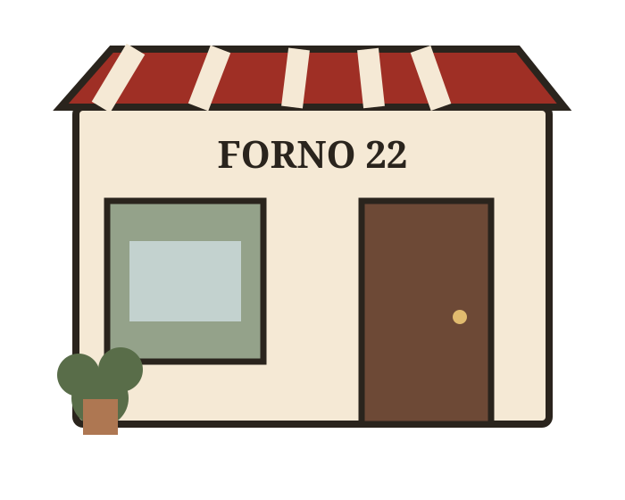

PIZZA CONTEMPORANEA • FORNO A LEGNA
Una pizza che
si fa ricordare.
Impasto leggero, ingredienti selezionati e una sala pensata per stare bene. Tutto ciò che ti serve, senza cercare tra dieci profili diversi.
4,8 ★127 recensioni
18:30–23:30Aperti questa sera
Centro cittàParcheggio vicino

DAL
2026
2026
IL LOCALE
Un posto semplice.
Con molta cura dentro.
Forno 22 nasce dall’idea che una pizza possa essere contemporanea senza diventare complicata. Materie prime riconoscibili, servizio diretto e una sala calda, informale.
- Impasti a lunga maturazione
- Produttori selezionati
- Birre artigianali e vini naturali
- Take-away disponibile
DICONO DI NOI
Le recensioni fanno scegliere.
★★★★★“Impasto leggerissimo e locale molto curato. Torneremo sicuramente.”
★★★★★“Menu chiaro, personale gentile e una Diavola spettacolare.”
★★★★★“Prenotato dal telefono in un attimo. Finalmente tutte le info nello stesso posto.”
CI VEDIAMO STASERA?
Il tavolo è a
due tocchi da qui.
In un sito reale questi pulsanti possono aprire WhatsApp, telefono, prenotazione online o Google Maps.